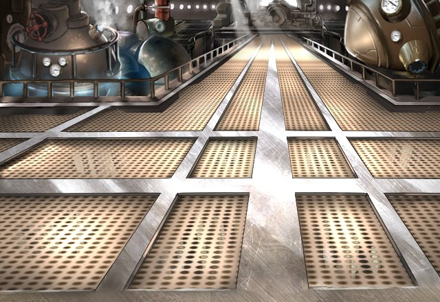

ルシアスの門が開かれて以来、グランガイアを探索、調査を行っていたアクラス召喚院。組織の幹部であるグラデンスとオーンは、ある特殊任務のため、召喚院最精鋭の人員を選出していた……。
グラデンス
メンバーは、グリフ、アイリス、 カフカ、ロア、リベラ、クランツ。
グラデンス
だが、あいつは 討伐隊の隊長になったばかり。
オーン
フン、グリフとクランツには、 何か目論見があるのだろう。
オーン
だが、あのヒヨッコどもの思惑が どうであろうと、俺に異論はない。
グラデンス
おおよそ、未知の場所に連れて行って、 一皮剥いてやろうといったところか。
グラデンス
ハッハッハッハッ…。 それもいいだろう。
グラデンス
魔神討伐隊隊長で構成された このメンバーだ。
グラデンス
どんな場所であろうとも、 間違いが起こることなどあるまい。
グラデンス
どうせお前のことだ。 自らが乗り込んでいきたいのだろう？
グラデンスとオーンが計画していたのは、遠くない未来、人類の脅威となりうる異界イシュグリアに先遣隊を送り込み、現地を調査探索することだった……。
そして、その先遣隊のメンバーとして、選ばれた７人の魔神討伐隊隊長たち。
グリフ
可能性に満ちた若造どもの未来を守るのは 年長者の役目だ。
アイリス
でも、私の力を必要とする状況。 それは喜べない状況よね…。
カフカ
再現させた死霊術の力、 せっかくだから見せてあげる。


ロア
異界の技術ってのは、 なかなかに興味深いぜ！！
ロア
調べれば調べるほど 新しい発見があるんだからな！！
リベラ
怖い敵がいるかもしれないけど、 きっと新しい発見もあるからね！
クランツ
よっし、この勢いで 一気に任務を終わらせよう！
クランツ
俺は自分の感覚を信じて、 もっと高みを目指すだけさ！
ミーファ
俺もクランツさんみたいに、 もっと強くなりたいです！
ミーファ
皆さんの足を引っ張らないよう、 精一杯頑張ります！！
遙かなる未開の地イシュグリアに意気揚々と出発する先遣隊メンバーたち…。送り出すグラデンスやオーンたち召喚老も誰１人として先遣隊の成功を、信じて疑わなかった……。そう、誰１人として……。
だが……
異界イシュグリアは、彼らの想像を遥かに超えた過酷な場所だった……。
現地に到着早々、強大な魔神に襲撃される先遣隊たち。
その魔神と対峙するため、グリフは１人、隊を離脱。隊長代理にクランツを任命する。
クランツは残りのメンバーとともに、ランドールへの帰還用ゲートがある場所を目指して進むことにしたが…。